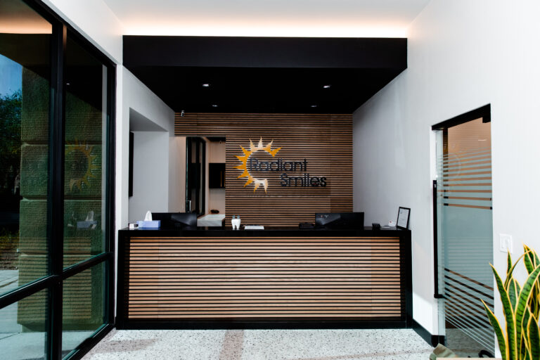

Everyday care.
Exams, cleanings, preventative care, digital X-rays, fluoride and sealants are all provided here.
Our office on S. Nellis Blvd., with evening appointments to 7 PM, its own direct phone line and online booking.
1825 S. Nellis Blvd., Las Vegas, NV 89107 (702) 452-3552
Tuesday and Thursday run to 7 PM, so an appointment after work is possible twice a week. Those two days also open later, at 11 AM.
Monday
9 AM to 5 PM
Tuesday
11 AM to 7 PM
Wednesday
9 AM to 5 PM
Thursday
11 AM to 7 PM
Friday
9 AM to 5 PM
Saturday
Closed
Sunday
Closed
This office is closed at weekends. Weekend hours differ by office, so check the hours listed on each office page.
Same-day and emergency appointments are available.

Exams, cleanings, preventative care, digital X-rays, fluoride and sealants are all provided here.
Restorations, cosmetic dentistry and oral and maxillofacial surgery are delivered at this office.
Periodontics and orthodontics are available here as well.
Sunrise Manor is one of seven offices Radiant Smiles owns and runs across Las Vegas, North Las Vegas and Henderson.
If your work moves you across the valley, your dentist does not have to change with it.
The alternative in this market is a set of separately owned or separately branded practices under a shared name. That structure cannot promise you a consistent standard between addresses, however similar the signage looks.
Our team page names ten dentists and states the credentials of each. Two of them are fluent in Spanish.

An examination, X-rays where they are needed, then a plain account of what we found. New patients can use the published entry offer for that visit.
Our insurance and financing page lists 41 named plans, including Culinary Health Fund, Teachers Health Trust and Nevada Medicaid. Network status varies by office and by plan, so this page makes no blanket guarantee. Call with your plan details before your appointment.
Same-day and emergency appointments are available. Call (702) 452-3552 and tell us it is urgent.
Book at the Sunrise Manor office, or call (702) 452-3552 and speak to this office directly.